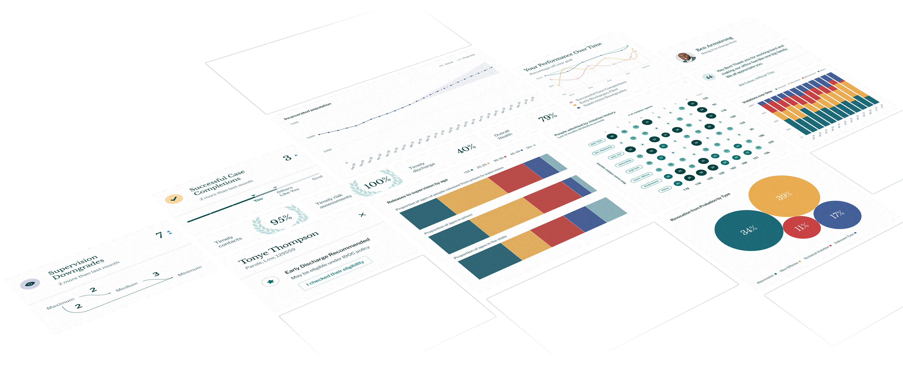

<section class="insight">
  
  <div class="container grid">
    <h1 class="insight__title">Get the right information to the right person at the right time.</h1>
    <ul class="list-reset insight__list grid">
      <li class="insight__item">
        <h2 class="insight__subtitle">For Leaders</h2>
        <p class="insight__descr">Set goals, forecast the impact of policy or practice changes, and track their outcomes across your agency.</p>
      </li>
      <li class="insight__item">
        <h2 class="insight__subtitle">For Line Staff</h2>
        <p class="insight__descr">Track probation and parole outcomes, see what’s leading to success, and reduce recidivism with our case management system.</p>
      </li>
      <li class="insight__item">
        <h2 class="insight__subtitle">For the Public</h2>
        <p class="insight__descr">Use open source code, public data, interactive tools, and data visualizations to understand the state of incarceration, promote accountability, and conduct research.</p>
      </li>
      <li class="insight__item">
        <h2 class="insight__subtitle">For Policymakers and Advocates</h2>
        <p class="insight__descr">Project the impact of policies on carceral, fiscal, and community outcomes. Understand where disparities begin, where they grow, and whether a policy is likely to increase or reduce them.</p>
      </li>
    </ul>
  </div>
</section>
